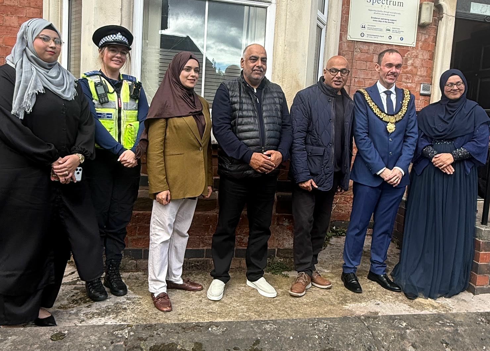
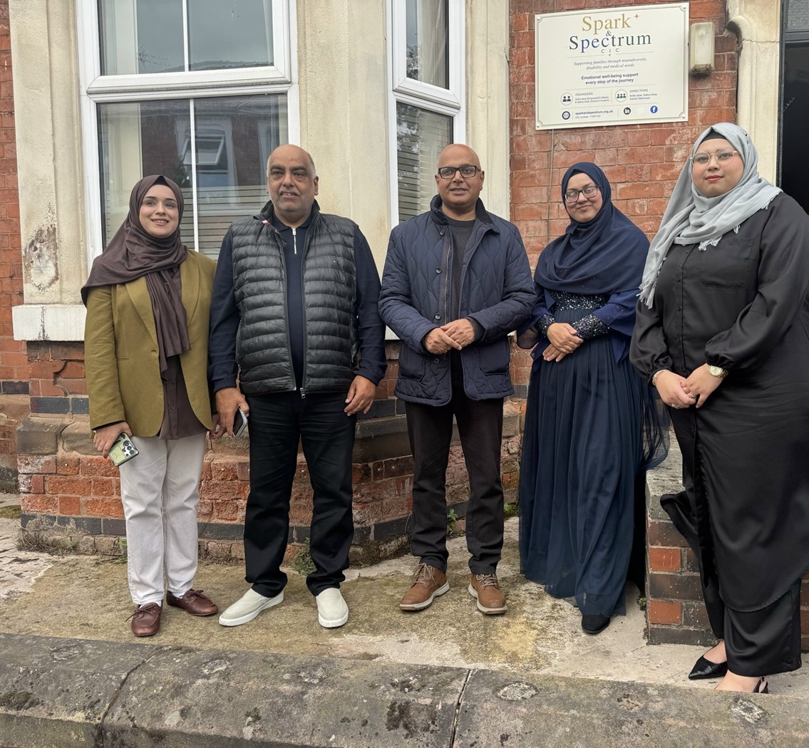

FRIDAY 27 NOVEMBER · 11 AM–12 PM
EmpowerED Minds at St James’ Centre
An interactive emotional capacity session with Sofia Iqbal.
Malcolm Street, Derby, DE23 8LU.
SPARK & SPECTRUM CIC · DERBY
We support children, young people, women and families, including those navigating neurodivergence, disabilities and medical needs.

Start with one of these three areas. You can ask us if you’re unsure.
FRIDAY 27 NOVEMBER · 11 AM–12 PM
An interactive emotional capacity session with Sofia Iqbal.
Malcolm Street, Derby, DE23 8LU.

THE PEOPLE BEHIND SPARK & SPECTRUM
Sofia, Selina and Aishah bring together emotional capacity education, SEND guidance and community connection.
Our work is shaped by lived experience and culturally sensitive support.
Meet our team →FOR FUNDERS & PARTNERS
Explore our work, the needs we address and ways to support programme delivery in Derby.
SUPPORTING OUR COMMUNITY
We’re grateful to the businesses who support Spark & Spectrum CIC, from our launch to the activities and events bringing our community together.
A special thank you to Amberglams for donating a box full of full-sized beauty products.
Thank you to Davpack for sponsoring branded paper bags for our goody bags for women and children.
Thank you to the bakers who supported our launch. You can find them on Instagram below.
Your support has helped us bring people together and grow a welcoming community for neurodivergent and disabled people and their families. Thank you for being part of our journey.